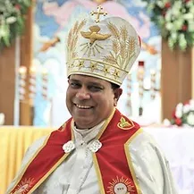
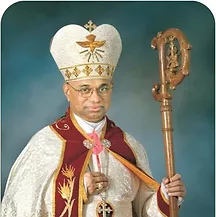

Mar Joy Alappatt
Bishop - St. Thomas Syro-Malabar Catholic Diocese of Chicago
About
St. Thomas Syro-Malabar Catholic Diocese of Chicago and the story of the Syro-Malabar faithful in North America.

Bishop - St. Thomas Syro-Malabar Catholic Diocese of Chicago

Retired Bishop (March, 2001 to July 2022)
Diocese History
His Holiness Pope John Paul II established St. Thomas Syro-Malabar Catholic Diocese of Chicago on March 13, 2001. Mar Jacob Angadiath was appointed as its first bishop, and his Episcopal Ordination was held in Chicago, together with the inauguration of the diocese, on July 1, 2001. On July 24, 2014, Pope Francis appointed Mar Joy Alappatt, Chicago as the Auxiliary Bishop of the diocese.
The Holy Father, Pope Francis, appointed Mar Joy Alappatt as the next Bishop of the St. Thomas Syro-Malabar Catholic Eparchy of Chicago on July 3, 2022.
The Syro-Malabar Church is the second largest Church among the Eastern Catholic Churches. St. Thomas the Apostle founded the Syro-Malabar Church, otherwise called the Church of St. Thomas Christians, in South India. The present Kerala State is the home of this Church. For centuries, St. Thomas Christians lived in the kingdoms of Travancore and Cochin.
The first step of migration of our people was to the Malabar region to the north and High Ranges to the East. Since the faithful were mostly farmers, they were looking for farm land and wherever they settled, they built Churches and established their own faith communities. The first diocese established for the migrants was Tellicherry in 1953 with Bishop Mar Sebastian Valloppilly. Then in 1956, the diocese of Kothamangalam was established for those who were in High Ranges with Bishop Mar Mathew Pothanamuzhy. Tellicherry has become Archdiocese with four suffragan dioceses and Kothamangalam has been bifurcated to form Idukki diocese.
The second step of migration was to different cities of India, like Bombay, Delhi, Chennai, Bangalore and Calcutta. In 1988, Kalyan Diocese was established in Bombay for our Syro-Malabar faithful, with Bishop Mar Paul Chittilappally. This diocese is growing fast now under the leadership of present bishop Mar Thomas Elavanal, MCBS. Bangalore, Chennai and Delhi are eagerly waiting to be established as dioceses.
The third step of migration was to Europe and United States of America. In late nineteen sixties and seventies there were large flow of people to United States in search of better opportunities. Professionals of our Church found better prospects in this new world. Among the professionals, nurses outranked every other group. They came in great numbers, as there was shortage of nurses in USA. They settled in major metropolitan cities and they brought their family members. Wherever our faithful settled they were eager to have Syro-Malabar liturgy whenever it was possible with the help of visiting priests or student priests from our Church. Small communities were formed in this fashion.
Since Malayalam was the language of people from Kerala, at first it was called "Malayalam Qurbana" (Mass) for all the Catholics from Kerala. The people in various cities, comprising of Syro-Malabar, Syro-Malankara, and Latin Church members from Kerala organized several Kerala Catholic Associations. Kerala Catholic fellowship of Chicago, and India Catholic Association of New York were such organizations. These Associations arranged Holy Qurbana (Mass) once a month in various locations and special celebrations were arranged for Christmas and Easter. "Onam" celebrations and picnics were other occasions of cultural gatherings.
In 1996 His Excellency Mar Gregory Karotemprel, CMI, the chairman of the Commission for the pastoral care for the migrants and apostolic visitator to USA and Canada, came here and made personal effort to visit as many places as possible to meet with the priests and people of Syro-Malabar Church. This formal visit enabled him to make a thorough study of the spiritual care of the faithful and formulate a detailed report to be submitted to the Holy Father and the Congregation for the Oriental Churches. In his report, he requested for the establishment of a diocese for the Syro-Malabar faithful in USA and Canada. Enormous work done by Mar Gregory Karotemprel, CMI, for the formation of a diocese of the Syro-Malabar Church in USA/Canada has to be acknowledged and appreciated.
Again, His Beatitude Mar Varkey Cardinal Vithayathil, C.Ss.R. present Major Archbishop but then Administrator of the Syro-Malabar Major Archiepiscopal Church, in 1998 made an extensive visit to main cities of USA/Canada where the Syro-Malabar faithful were in considerable numbers. Having visited the people and realizing the need for better spiritual care for our people, the Major Archbishop also recommended to Rome the need of a hierarchical arrangement here.
In 1999 August a North American Syro-Malabar Catholic Convention was held in Philadelphia. The initial step was taken by lay-leaders of our Church in consultation with the then Directors of Syro-Malabar Missions in different places. The organizers worked hard to make this first Syro-Malabar Convention a great success. The presence of His Beatitude Mar Varkey Cardinal Vithayathil and other dignitaries of our Church made the Convention successful and it enhanced the need of hierarchical setting here in USA/Canada.